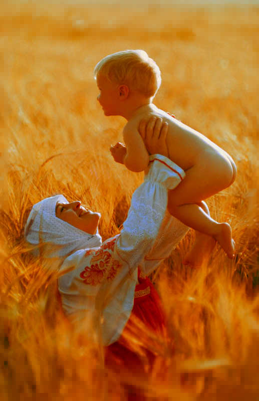
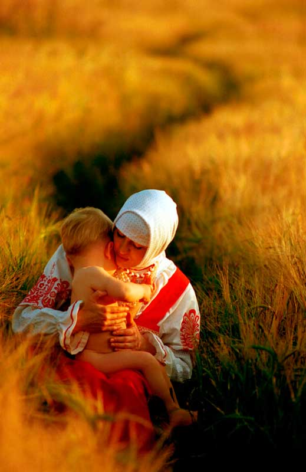

«Великий Долг каждого Родителя, и каждого Старца Древнего Рода, воспитать все потомство свое, согласно древним Устоям Рода, ко Дню Совершеннолетия потомков».
Слово Мудрости волхва Велимудра
Ведическое воспитание детей

Воспитание: В –Веды, О – Отца, С - Совесть Питавшие: Веды Отца Совесть питавшие.
В народе говорят, кто думает на год вперед - растит пшеницу, кто думает о десятилетиях - растит сад, а кто о вечности - воспитывает детей.
С самых ранних лет все дети - потомки Рода Небесного воспитывались в соответствии с Небесными Законами Рода-Породителя: в искренней любви к своему древнему Роду-Племени, в уважении к своей родной изначальной вере, истории самобытной культуре и народной традиции, в почтении к старшим и в заботе о младших, как того требуют Древние Законы Рода и жизненный уклад.
Древние Законы любви помогали создать из ребенка гармоничного человека, будущего продолжателя Древнего Славяно-Арийского Рода, помогая ему развиваться и совершенствоваться в дальнейшей жизни, наполняя свои четыре составляющих: Тело, Душу, Дух и Совесть – Божественным Светом Любви. Если не развивать их все одновременно или развивать только какую-либо одну часть единого целого, то гармоничное развитие нарушается, и это может привести не только к нарушению развития человека, но и к его деградации и в конечном итоге к вырождению и гибели Древнего Рода.
Знакомство ребенка с образными символами своего Рода и Веры начиналось в младенчестве с обережных знаков и орнаментов, глиняных игрушек, в которых жили древние образы и предания. Приобщение детей к овладению навыками созидательного труда происходило в возрасте от трех до семи, ибо в этом возрасте у всех детей очень сильно развито общинное мышление. Дети познают окружающий мир и овладевают навыками путем подражания старшему поколению, а также перенимая многое у своих сверстников. Для детей это была особая, занимательная форма игры в реальную жизнь, где они старались быть похожими на своих старших братьев и сестер, родителей, дедов.
Каждого мальчика и каждую девочку неизменно воспитывали в уважении к противоположному полу. Девочкам говорили: «мальчик это будущий мужчина, хозяин, воин, глава Рода, отец будущих детей, Бог-Защитник Рода», поэтому к нему надо относится с уважением как, как к Богу. Мальчикам говорили: «Девочка-это будущая Лада, будущая хозяйка, это Богиня-Хранительница домашнего очага, мать будущих детей, поэтому её надо любить, уважать, и почитать как Богиню». Поэтому когда создавался новый Семейный Союз, то отношения у молодых супругов были чистые и светлые, как у Богов, живущих на Земле.
Детей в древние времена одевали в рубахи, сшитые не из нового полотна, а обязательно из одежды родителей. Рубашка мальчику шилась из рубахи отца, а рубашка девочки – из рубахи матери, это связано с могучей обереговой родительской силой, которая охраняет подрастающее поколение.
Детям прививались понятия чести, сердечной дружбы, взаимопомощи, верности своему слову и долгу перед Родом.
Обучение: до 7-8 лет, ребенок обучался в домашнем кругу (помощь родителям по хозяйственным делам, работа в поле, помощь в воспитании младших детей), то есть овладевали навыками Созидательного труда. После 8 лет, дети посещали волхвов (которые жили в данном селении или приходили на определенное время, или же волхвов приглашала община).
Начиная, с 7-9 лет детей обучали всем изначальным основам и общей грамоте, счету и вычислениям, письму, естествоведению, то есть знаниям, объясняющим Божественные, Природные и Человеческие Истоки Жизни. С 12 лет дети могли стать учениками у мастеров.
Из серии книг «Звенящие Кедры России» В. Мегре:
« Своих детей ведруссы безбоязненно на вольницу пускали. Все знали: система празднеств, обрядов так тонко и умело продумана была, что увлекала всех детей на подготовку к ним. Они играли вроде бы, на самом деле обучались сами, без взрослых часто, наукам разным. Экзамены в ведруссокой школе на празднеств череду похожи были, игрищ (с.106.). Череда веселых празднеств у людей ведрусского периода –это система, помогающая мирозданье познавать и обучать детей простым житейским мудростям (с.107). Родители своих детей насильно учиться не заставляли, но при удобном случае могли им ненавязчиво подсказку дать» (с.108).
Учителя: Волхвы - учителя и информаторы о происходящем в мире. Бояны, барды напоминали тоже о событиях из прошлого, и будущее предрекали и прославляли мир прекрасных чувств, иль порицали недостойных. На их уроки, постоянно проводившиеся в селенье каждом, никто не заставлял детей ходить. Считалось, сам учитель, каждый должен суметь привлечь внимание ребёнка к рассказу о науке, которую поведать собирался. Такие правила, веками совершенствовали учителей-волхвов (с.107). Волхвы учили: « как стать красивой самой. И как создать Любви пространство для любимого,… как плести венец, и как отвар готовить для любимого из трав, чем умываться можно по утрам, чтоб тело пахло, как цветок… Он будет говорить о звездах, о Луне небесной, Солнце и мирах невидимых. Кто его понять сумеет, тот звезду зажечь на небе сможет путеводную любимому избраннику, и та звезда обоим светить будет вечно… Далее придет волхв, который знает как самого из строптивых коней можно покорным для любимого и другом ему сделать и приучать зверей… Еще к вам бард придет, он знает как писать стихи, и песни голосом выводить,…, и танцевать он может научить. Другие научат рисовать и вышивать орнаменты, в них смысл закладывать свой потаённый,.., кА чувства добрые вложить в рубашку, когда шьешь её, и та рубашка охранять от многих будет бед,…как можно кашу приготовить с любовью своим близким, и они не только плоть свою насытят, но и душу,…, от первого волхва, сама того не ведая, она познала истину великую любви » (с. 109-113)
Воспитание не велось в отрицательных формах: «не лезь», «не надо», «не нужно». Детей до 12 лет называли одним словом «чадо». До обряда совершеннолетия в 12 лет, детей вместе купали, одевали - не было различия по полу. В этом возрасте ребенок, достигая семи пяди во лбу (1.24 м) проходил обряд посвящения в совершеннолетие и уже отвечал за свои поступки, ему давалось тайное имя. А если он не проходил такого обряда, за все его дела неважно если человеку уже 50 лет, все равно отвечали отец с матерью.
Воспитанием детей, как духовным, так и физическим, у Православных Староверов занимаются в основном только мужчины, главы Родов, то есть отцы и деды. В общении с ребенком у отца, под воздействием Духовной Силы ребенка, открываются дополнительные сферы осознания окружающего мира. Отец получает от Богов и Предков Рода еще больше Духовной мощи. Эту мощь отец получает не от самого ребенка, а через него. Ребенок в нем открывает духовные каналы связи с Силой Рода, и отец восстанавливает свою Жизненную Силу, отданную для рождения ребенка. Поэтому говорилось: «Шестнадцать детей родишь, шестнадцать дополнительных каналов связи с Родом откроется».
Удел всех славянских и арийских матерей – окружать детей: лаской, заботой, любовью и вниманием, но они не должны потакать прихотям детей, ибо этим они могут погубить чистую душу и светлый дух ребенка.
С самих ранних лет дети из Великих Родов и Потомки Рода Небесного воспитывались с соответствии с Небесными Законами Рода - Породителя: в искренней Любви к своему Роду-Племени, в уважении к своей Родной Изначальной Вере, Летописи, самобытной Культуре и народной Традиции, в почтении к старшим и в заботе о младших, как того требуют Древние Законы Рода и его жизненный уклад.
Древние Законы Рода всегда воспитывали в подрастающем поколении свастичное чувство Любви, которое само объединяло в себе четыре вида любви:
- Любовь к Изначальной Вере (Истине) и Богам (Предкам);
- Любовь к Роду (человеку, Семье, Роду, Женщине, детям, Традиции);
- Любовь к Матери-Природе (к различным формам Жизни окружающего Мира);
- Любовь к Земле Предков (Отчизне, Державе, Истории и Культуре).
Сии четыре вида Любви помогали создать из ребёнка гармоничного Человека, будущео продолжателя Рода, помогая ему развиваться и совершенствоваться в дальнейшей жизни, наполняя свои четыре составляющих: Тело, Душу, Дух и Совесть – Божественным Светом Любви.
Ибо Любовь к Родной Изначальной Вере и Родовым Светлым Богам развивает Дух человека; Любовь к окружающей Матушке-Природе развивает Душу человека; Любовь к Родной Земле своих Предков развивает Тело человека, а Любовь к Роду (Небесному, а также Земному) развивает в человеке Совесть.
Гармоничное развитие свастичной системы человека (Тело, Душа, Дух и Совесть) всегда определялось двумя Великими Принципами, которые были неизменной составляющей Древних Законов Рода: «Свято чтить Богов и Предков своих»; «Всегда Жить по Совести и в гармонии с Природой», а свастичное чувство Любви только благостно способствовало этому.
Гармоничное развитие человека возможно только тогда, когда в человеке развиты все четыре составляющих: Тело, Душа, Дух и Совесть. Если не развивать их все одновременно или развивать только какую-либо часть Единого целого, то гармоничное развитие нарушается, и это может привести не только к нарушению развития человека и потомков его Рода, но и к деградации человека, а в конечном итоге к вырождению и гибели Рода.
Когда детям исполнялось 12 лет (108 месяцев) и они достигали роста 7 пядей во лбу (124 см), для детей начинался новый этап в жизни.
Всё подрастающее поколение проходило древние Обряды Совершеннолетия и Обряды Имянаречения, ибо наши Предки считали имя важной частью человеческой личности.
После прохождения древних Обрядов юноши и девушки считались взрослыми, совершеннолетними, готовыми продолжать традиции своих Родов. После Обряда Совершеннолетия подрастающее поколение несло полную ответственность за все свои совершённые деяния, слова и поступки, как и положено взрослому человеку.
Юноши в 12 лет получали два меча; это означало, что за 9 лет они должны были в совершенстве овладеть боевыми приёмами владения мечами и стать воинами, Защитниками своего Рода, своей Древней Веры Предков и своей Родной Земли, независимо от избранного Пути и варновой принадлежности.
Девушки получали символьное веретено и прялку; это означало, что за 4 года они должны были в совершенстве овладеть рукоделием, ведением домашнего хозяйства, полеводством и садоводством, кулинарным искусством, уходом за детьми.
Начиная с 12 лет, юноши и девушки, прошедшие Обряды Совершеннолетия и Имянаречения, начинали основательно изучать Древние Законы Рита, т.е. Небесные Законы и чистоте Рода и Крови, знание и соблюдение которых было обязательным при достижении определённого возраста и создания Семейного Союза, а также Родовые Традиции и профессии, секреты которых хранили в их Роду и Варне.
Использованные материалы: Славяно-Арийские Веды, Книга Третья. Омск 2000-2003 год; журналы: Ведическая культура: № 1 по № 16. Краснодар 2005 год; Серия книг "Звенящие Кедры России" - В. Н. Мегре.